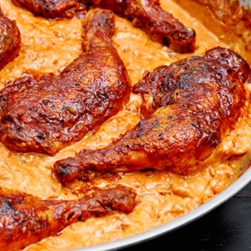

← All recipes
Chicken Paprikash

Servings: Serves 4-6 · Cook: 1 hr
Ingredients
- 3 to 4 pounds chicken thighs and drumsticks, or whole chicken legs
- Kosher salt and freshly ground black pepper to taste
- 1 tablespoon neutral oil, like canola
- 3 tablespoons unsalted butter
- 1 large yellow or Spanish onion, peeled and diced
- 3 cloves garlic, peeled and minced
- 3 tablespoons Hungarian paprika, sweet or hot, or a combination
- 3 tablespoons all-purpose flour
- 1 cup canned crushed tomatoes or 1 large ripe tomato, chopped
- 1 cup chicken broth, homemade or, if not, low-sodium
- 1 pound egg noodles
- 3/4 cup sour cream
Directions
- Heat oven to 400. Season the chicken aggressively with salt and pepper. Heat the oil and 1 tablespoon of the butter in a large, heavy, oven-safe sauté pan or Dutch oven set over high flame, until the butter is foaming. Sear the chicken in batches, skin-side down, until it is golden and crisp, approximately 5 to 7 minutes. Then turn the chicken over, and repeat on the other side, approximately 5 to 7 minutes. Remove chicken to a plate to rest.
- Pour off all but 3 tablespoons of the accumulated fat in the pot. Return the pot to the stove, over medium heat, and add the onion. Cook, stirring frequently with a spoon to scrape off any browned bits of chicken skin, until the onion has softened and gone translucent, approximately 5 minutes. Add the garlic, and stir again, cooking it until it has softened, approximately 3 to 4 minutes. Add the paprika and the flour, and stir well to combine, then cook until the mixture is fragrant and the taste of the flour has been cooked out, approximately 4 to 5 minutes.
- Add tomatoes and broth, whisk until smooth and then nestle the chicken back in the pan, skin-side up. Slide the pan or pot into the oven, and cook until the chicken has cooked through and the sauce has thickened slightly, approximately 25 to 30 minutes.
- Meanwhile, set a large pot of heavily salted water to boil over high heat. Cook noodles in the water until they are almost completely tender, approximately 7 to 8 minutes. Drain the noodles, and toss them in a bowl with the remaining butter, then toss again to coat.
- Place the chicken on top of the noodles, then add the sour cream to the sauce, stir to combine and ladle it over the whole.
Original source: cooking.nytimes.com